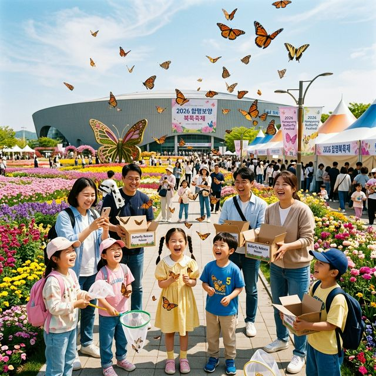
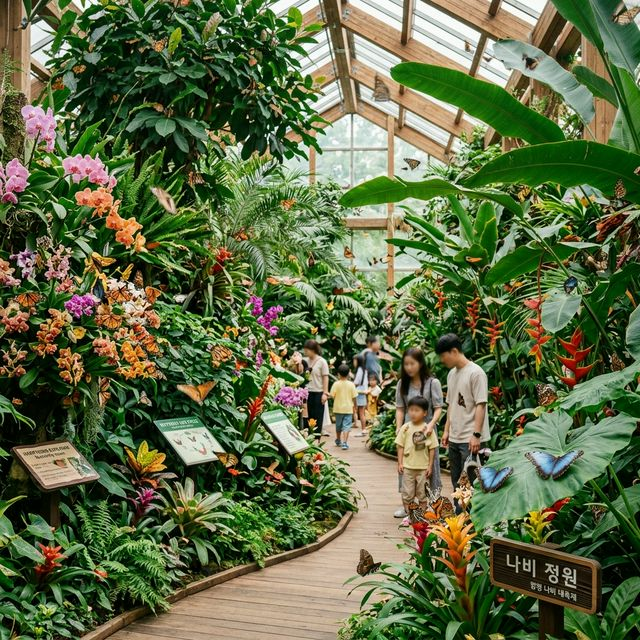
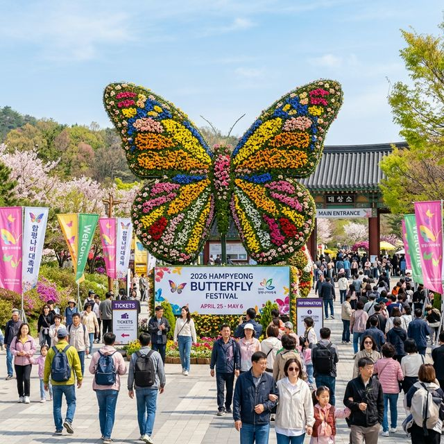

대한민국을 대표하는 생태 환경 축제인 함평 나비대축제가 2026년 봄, 더욱 화려한 모습으로 돌아옵니다. 올해 축제는 4월 24일 금요일 개막하여 어린이날인
5월 5일 화요일까지 총 12일간 운영됩니다. 함평은 과거 농경지였던 곳을 나비라는 친환경 소재와 결합하여 세계적인 축제의 장으로 탈바꿈시킨 성공적인 지역 재생의 모델로
손꼽힙니다. 2026년에는 '지속 가능한 자연과의 동행'이라는 화두를 던지며 역대 최대 규모인 20여 종, 30만 마리의 나비를 선보일 예정입니다.
축제의 핵심은 단순한 관람을 넘어선 '교감'에 있습니다. 도시에서 나비를 접하기 힘든 아이들에게 직접 날개를 만져보고(지정 구역), 날려보는 경험은 생명 존중의 가치를
배우는 소중한 시간이 됩니다. 엑스포공원 내부는 튤립, 팬지, 유채꽃 등 봄꽃들이 만발하여 나비들의 안식처이자 관람객들의 거대한 정원 역할을 수행합니다. 매일 오전 9시부터 오후 6시까지 운영되므로
온종일 나비와 함께하는 힐링 타임을 누릴 수 있습니다.
올해는 특히 디지털 미디어 아트와 나비 생태를 결합한 특별 전시관이 신설되어, 야간 관람객들에게도 색다른 볼거리를 제공합니다. 낮에는 생생한 자연의 나비를, 밤에는 빛으로
재탄생한 나비를 만날 수 있는 2026년 함평은 함평은 봄 나들이객들에게 거부할 수 없는 유혹이 될 것입니다.

2026 함평 나비대축제의 하이라이트! 아이들과 함께하는 야외 나비 날리기 퍼포먼스 현장 — AI 제작 이미지
축제를 스마트하게 즐기는 첫 번째 단계는 사전 예매입니다. 4월 23일까지 진행되는 온라인 예매(티켓링크, 네이버)를 이용하면 현장 판매가보다 10% 할인된
가격으로 티켓을 확보할 수 있습니다. 성인 기준 현장가는 7,000원이지만 예매 시 6,300원에 구매 가능합니다. 큰 금액이 아닐 수 있지만, 온 가족이 방문할 경우 식사 한
끼 비용을 절약할 수 있는 알뜰 팁입니다.
함평 나비대축제의 독특한 점은 '입장권 쿠폰제'입니다. 성인과 청소년 입장권에는 각각 2,000원과 1,000원 상당의 쿠폰이 포함되어 있습니다. 이 쿠폰은 축제장 내부의
먹거리 장터뿐만 아니라 함평군 전역의 일반 음식점과 상점에서 현금처럼 사용할 수 있어 지역 경제 활성화에 기여합니다. 사실상 입장료의 상당 부분을 돌려받는 구조라 체감 입장료는 훨씬 낮아지는 효과가
있습니다.
또한, 입장권 소지자는 당일에 한해 인근의 함평자연생태공원과 양서·파충류생태공원을 50% 할인된 가격으로 이용할 수 있습니다. 엑스포공원을 둘러본 뒤 오후 늦게 다른 생태
시설까지 탐방하는 풀코스 여행을 계획 중이라면 반드시 입장권을 버리지 말고 챙겨두셔야 합니다.
| 구분 | 현장 가격 | 사전 예매 (10% 할인) | 비고 (쿠폰 포함) |
|---|---|---|---|
| 성인 | 7,000원 | 6,300원 | 2,000원 쿠폰 포함 |
| 청소년 | 5,000원 | 4,500원 | 1,000원 쿠폰 포함 |
| 어린이/경로 | 3,000원 | 2,700원 | 50% 연계 할인 제공 |
가장 인기 있는 프로그램은 단연 '나비 날리기 체험'입니다. 지정된 시간에 관람객들이 나비 케이스를 열어 직접 하늘로 날려 보내는 이 퍼포먼스는 축제장 곳곳에서 탄성이
터져 나오게 만듭니다. 나비들이 관람객의 손이나 어깨에 잠시 내려앉았다가 꽃밭으로 날아가는 모습은 촬영 버튼을 누르지 않고는 못 배길 명장면입니다. 매회 한정된 정원으로 운영되므로 입장 후 체험 예약
키오스크로 달려가시는 것이 좋습니다.
야외 광장에 마련된 '나비 꽃 동산'은 수백만 송이의 꽃과 나비가 어우러진 거대한 스튜디오입니다. 인위적인 울타리 없이 자연스럽게 식재된 꽃들 사이로 호랑나비, 배추흰나비
등이 자유롭게 노니는 모습을 관찰할 수 있습니다. 2026년에는 나비의 활동성을 높이기 위해 특수 영양원을 공급하는 조형물들을 설치하여, 과거보다 더 활기차게 움직이는 나비들을 가까이서 볼 수 있게
되었습니다.
또한 '나비와 함께 왈츠를'이라는 음악 공연 테마 구역에서는 잔잔한 클래식 음악에 맞춰 나비들이 춤추듯 날아다니는 평화로운 풍경을 제공합니다. 벤치에 앉아 가만히 귀를
기울이고 눈을 감았다 뜨면 바쁜 일상에서 벗어난 진정한 쉼을 경험할 수 있습니다. 나비의 날갯짓 소리가 들릴 듯한 조용한 숲속 구역은 어르신들이 특히 선호하시는 명인 구간입니다.

전 세계 희귀 나비들이 모여있는 신비로운 실내 생태관 내부 정경 — AI 제작 이미지
어린 자녀와 함께라면 주 무대 공연 일정을 반드시 체크해야 합니다. 2026년에는 '대통령 나비'라는 별칭에 걸맞게 아이들의 영웅 '핑크퐁과 아기상어 공식 싱어롱쇼'가
매일 2회 공연됩니다. 신나는 음악과 율동으로 채워진 이 무대는 아이들이 가장 열광하는 시간이며, 공연 후에는 캐릭터와 함께 사진을 찍을 수 있는 포토 타임도 제공됩니다. 부모님들에게는 잠시 휴식을,
아이들에게는 무한 에너지를 발산할 기회입니다.
오후 시간대에 진행되는 '나비 판타지아 퍼레이드쇼'는 축제장을 화려한 축제의 도가니로 몰아넣습니다. 나비 요정으로 변신한 무용단과 꽃 수레가 행진하며 비눗방울과 종이
꽃가루를 날리는 모습은 롯데월드나 에버랜드 부럽지 않은 퀄리티를 자랑합니다. 퍼레이드 행렬이 멈추는 중간 지점에서는 관람객들과 함께 춤을 추는 소통형 이벤트가 마련되어 더욱 즐거움을
더합니다.
더불어 나비 꿈 나무 만들기 체험존에서는 아이들이 자신의 꿈을 적은 나비 모양 카드를 거대한 조형물에 매다는 프로그램도 진행됩니다. 2026년 축제가 끝난 뒤 이 사연들은
디지털 타임캡슐에 저장되어 내년 축제 때 다시 확인할 수 있는 이벤트를 예고하고 있어, 방문의 의미를 더욱 깊게 해줍니다.
날씨가 덥거나 갑작스러운 비가 올 때를 대비해 실내 전시관 동선을 미리 짜두는 것이 좋습니다. 엑스포공원 내 '나비 생태관'은 거대한 온실
형태로 조성되어 기상 조건과 상관없이 수많은 나비를 관찰할 수 있는 핵심 시설입니다. 이곳에서는 알에서 애벌레, 번데기를 거쳐 나비가 되는 전 과정을 실시간으로 지켜볼 수 있어 학생들의 탐구 학습지로
최고의 인기를 누립니다.
특히 '세계 희귀 나비 전시관'은 전 세계에서 수집된 수천 여 종류의 나비 표본과 실물 나비를 볼 수 있는 곳입니다. 무지개색 빛을 내는 모포나비부터 투명한 날개를 가진
유리나비까지, 자연의 신비로움을 극명하게 보여주는 고밀도 정보의 장입니다. 2026년에는 나비의 날개 문양을 현미경으로 확대하여 감상할 수 있는 인터랙티브 부스가 설치되어 성인 관람객들에게도 큰 지적
유희를 선사합니다.
실내관 내부에 있는 '나비 숲 도서관'은 숲속 도서관 컨셉의 휴게 공간입니다. 나비와 관련된 동화책과 생태 서적들이 구비되어 있어, 체험을 마치고 잠시 조용히 독서를 하며
열기를 식히기에 좋습니다. 통창 밖으로 보이는 엑스포공원의 전경을 배경으로 지식의 향취에 젖어보는 시간은 함평 축제만의 또 다른 매력입니다.

함평엑스포공원 입구의 웅장한 꽃나비 대형 조형물과 관람객들 — AI 제작 이미지
함평 하면 나비만큼 유명한 것이 바로 '황금 박쥐'입니다. 순금 162kg을 들여 제작한 황금 박쥐 상징물이 전시된 이곳은 축제장의 필독 코스 중 하나입니다. 단순한
볼거리를 넘어 지역의 멸종위기종 보호 의지를 담은 이 조형물은 그 가치와 무게감만으로도 관객을 압도합니다. 금값이 폭등한 2026년 현재는 보안이 더욱 강화되어 더욱 특별한 관람 환경을 제공하고
있습니다.
공원 외곽으로 연결된 '생태 습지 탐방로'는 나비 축제의 복잡함에서 벗어나 차분한 자연의 정취를 느끼기에 좋습니다. 습지 식물과 각종 수생 생물들이 공존하는 이 길을 따라
걷다 보면 왜 함평이 나비의 고장이 될 수 있었는지 생태적 근거를 발견하게 됩니다. 아이들은 습지 미로 탈출 체험을 통해 즐겁게 생태 지식을 습득할 수 있습니다.
습지 한편에 마련된 전통 가축 체험장에서는 송아지 우유 주기, 토끼 먹이 주기 등 소박하지만 정겨운 농촌 체험도 가능합니다. 화려한 테마파크식 축제가 주는 흥분과 전통
농촌의 서정성이 공존하는 곳이 바로 함평 엑스포공원의 진면목이라 할 수 있습니다. 돗자리를 펴고 습지 옆 버드나무 그늘에서 취하는 휴식은 5월의 햇살만큼이나 달콤할 것입니다.
축제 기간 전남 함평은 전국에서 몰려드는 차들로 교통 정체가 발생할 수 있습니다. 가장 현명한 방법은 KTX나 ITX-마음 열차를 이용해 함평역에 내리는 것입니다. 축제
기간에는 코레일과 연계하여 주요 열차들이 함평역에 임시 정차하며, 역에서 축제장까지는 무료 셔틀버스가 5~10분 간격으로 운행됩니다. 운전 피로 없이 맥주 한 잔 곁들인
축제를 즐기고 싶다면 열차 여행이 정답입니다.
자차를 이용한다면 평일 방문이 가장 좋지만, 주말에 가야 한다면 오전 10시 이전 도착을 목표로 하세요. 함평 엑스포공원 정문 주차장은 일찍 매진되므로 내비게이션에 '함평 나비축제 임시
주차장'을 검색하여 외곽 주차장에 세운 뒤 도보나 연결 셔틀을 이용하는 것이 정신 건강에 이롭습니다. 2026년에는 스마트 주차 시스템이 도입되어 앱을 통해 실시간 빈자리 정보를
확인할 수 있습니다.
입장 마감 시간 직전인 오후 4시 이후 방문도 의외의 꿀팁입니다. 단체 관광객들이 빠져나가는 시간이라 한산하게 전시관을 둘러볼 수 있으며, 붉게 물드는 노을과 어우러진 꽃밭의 조경은 낮과는 또 다른
장관을 연출합니다. 단, 실내 전시관은 오후 6시에 정시 폐장하므로 동선을 신속하게 계획해야 한다는 점을 잊지 마세요.
전라남도 여행의 완성은 음식입니다. 함평에 왔다면 반드시 맛봐야 할 음식 1순위는 '함평 한우 생비(생고기 비빔밥)'입니다. 함평천
우시장에서 매일 공급되는 신선한 한우 암소 고기를 듬뿍 얹은 비빔밥은 입안에서 녹는듯한 식감과 깊은 고소함을 자랑합니다. 입장권에 포함된 쿠폰을 사용할 수 있는 지정 식당들이 축제장 입구 '함평 비빔밥
거리'에 즐비하므로 점심 한 끼는 무조건 이곳을 공략해 보세요.
축제장 내부의 향토 음식점에서는 함평 나비 쌀로 만든 떡과 식혜, 고구마 튀김 등 정겨운 간식거리를 만날 수 있습니다. 특히 2026년에는 젊은 층을 겨냥한 '나비
마카롱'과 '꽃 피는 나들이 도시락' 등 감각적인 로컬 푸드들이 출시되어 미각뿐만 아니라 시각적인 만족도까지 높여줍니다. 야외 테이블에 앉아 함평천을 바라보며 즐기는 국밥 한 그릇도 빼놓을 수 없는
묘미입니다.
선물용으로는 함평 양파즙과 잡곡 세트가 가성비와 품질 면에서 훌륭합니다. 현장 직거래 장터에서는 유통 단계를 줄여 시중보다 저렴한 가격에 믿을 수 있는 지역 농산물을
구매할 수 있습니다. 특히 5월 초에 나오는 햇마늘과 양파는 주부 관람객들에게 가장 인기가 많은 품목이니 장바구니를 넉넉하게 준비하시기 바랍니다.
마지막으로 쾌적한 관람을 위한 팁을 정리해 드립니다. 함평 엑스포공원은 부지가 매우 넓으므로 편한 평상화나 운동화는 필수입니다. 또한 5월 초의 햇살은 생각보다 따가우므로
어린이들을 위한 선크림과 휴대용 선풍기를 미리 준비하세요. 유모차와 휠체어 대여소가 공원 입구에 구비되어 있으니 필요하신 분들은 우선 대여 후 이동하시는 것이
편리합니다.
축제장 내 무료 Wi-Fi가 제공되지만, 혼잡 시간대에는 속도가 느려질 수 있으므로 디지털 입장권은 미리 캡처해 두거나 종이 입장권으로 교환하여 소지하시길 권장합니다. 환경 보호를 위해
개인 텀블러를 지참하시면 행사장 내 음료 구매 시 추가 할인 혜택을 주는 부스들이 많으니 참고해 보세요. 작은 실천이 함평의 아름다운 나비 서식지를 지키는 힘이
됩니다.
사랑하는 이와 손을 잡고 30만 마리 나비의 날갯짓을 지켜보는 일, 그것은 2026년 봄이 우리에게 주는 가장 큰 축복 중 하나일 것입니다. 함평에서 보내는 시간이 여러분의 일상에 기분 좋은 생기를
불어넣어 주길 진심으로 바라며, 나비처럼 가볍고 행복한 발걸음으로 축제를 만끽하시기 바랍니다. 감사합니다.